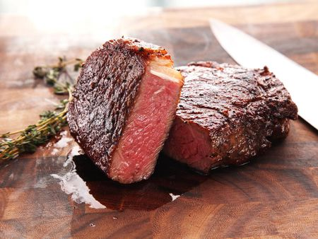

Cast Iron Steak

Description
Using just a few simple ingredients along with a nice quality
iron cast skillet will reward your taste buds with one of the
finest yet rustic dishes ever created. Perfect for when you
don't want to spend too much time cooking on a particular evening.
Ingredients
- A steak cut of your choice
- Salt
- Pepper
- Butter
- Rosemary
- Thyme
Steps
- Preheat the skillet to the highest temperature on your stovetop.
- While the skillet is preheating, season the steak generously
with salt and pepper.
- Once the skillet starts smoking, place the steak in and sear (depending on
thickness/preferred doneness, give or take) for a few minutes on one side.
- Flip the steak and sear the other side for about 2/3rds the time.
- While it's still cooking, toss in 2 tablespoons of butter and 1 sprig of
each rosemary and thyme.
- Grab a spoon, tilt the skillet towards you and start basting the steak.
- After time is up, remove the steak and let it rest for 5 minutes. Enjoy.